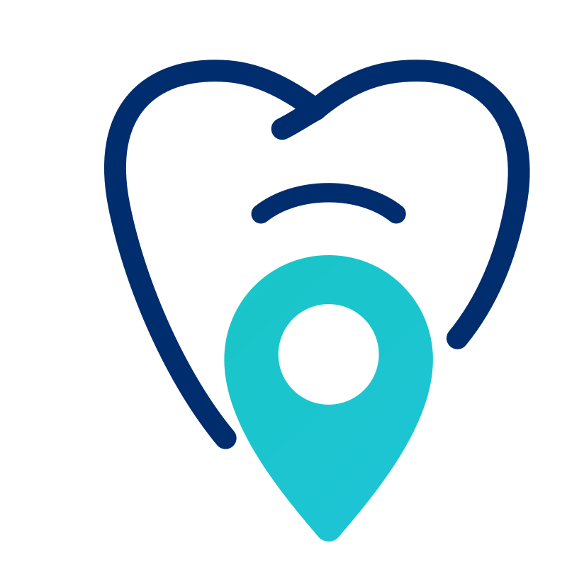

Building the dental nurse network
Reliable dental nurse cover. Simplified.
ToothScout is preparing a smarter way for verified dental nurses and dental practices to connect. Dental nurses join first. Practice registration unlocks when the network reaches launch readiness.
✓ Dental nurse focused✓ Phased launch✓ No login required
▦
Practice needCover requirement captured
◉
Suitable dental nurseVerification and fit reviewed✓
Match identifiedPractice decides whether to proceedOur launch journey
Grow the network. Unlock the next stage.
The indicator shows progress without publishing registration numbers. When dental nurse coverage reaches the launch threshold, practice registration opens.
01
Build the dental nurse network
Dental nurses complete registration and verification across the target coverage area.
02
Practice registration unlocks
Practices can prepare requirements and register once the supply network reaches readiness.
03
ToothScout opens
Practices publish requirements, dental nurses review clear opportunities and both parties decide whether to proceed.
Why ToothScout
Designed around better decisions.
◎
Dental nurse specialists
A focused marketplace built around dental nurse opportunities and cover requirements.
✓
Verification first
Registration includes identity, GDC, Right to Work, Enhanced DBS, qualifications, references and work-history checks.
⌁
Better matching
Requirements can include skills, competencies, software familiarity, experience, location and availability.
£
Transparent terms
Rates, hours, requirements and payment terms are shown before a dental nurse decides.
◷
Faster payment options
Practices may offer faster payment terms to make an opportunity more attractive. Terms are visible before acceptance.
☵
Clear communication
Phone, email, WhatsApp and online updates support the journey from requirement to completion.
Interactive preview
See how an opportunity will flow.
This demonstration shows the intended experience. It does not suggest that live bookings are already available.
Practice creates a requirementHours, location, rate, experience, skills, systems and payment terms.
Suitable dental nurses review itClear information is available before deciding.
ToothScout Match SummaryThe practice sees how the proposed nurse aligns with the stated requirement, including any gaps.
Both parties decideToothScout facilitates the connection and is not presented as the dental nurse's employer.
Available Opportunities
SOE Exact Dental ✓ Dental Nurse Required 📍 Bicester 🕒 08:30-17:30 £19/hr • 7 Day Pay 2.3 Miles Away View Opportunity →
Oxford Orthodontic Centre ✓ Orthodontic Dental Nurse Required Oxford • 09:00-18:00 £18/hr • Same Day Pay View Opportunity →
View All Opportunities →
Questions answered
Clear from the start.
ToothScout is currently building the dental nurse network. Practices can learn how the future service is intended to work and register interest when the next phase opens.
Is ToothScout live?
The launch is phased. Dental nurse registration comes first. Practice registration unlocks when network readiness is reached.
Does ToothScout employ dental nurses?
ToothScout is being developed as a matching and introduction marketplace. Dental nurses decide whether to accept opportunities. Final contractual and payment arrangements will be clearly presented before launch.
What is verified?
The onboarding process is designed to check GDC registration, identity, Right to Work, Enhanced DBS status, qualifications, references and work history before a dental nurse becomes available through ToothScout.
How are payment terms shown?
Practices will choose the rate, hours and available payment-speed option for each opportunity. Dental nurses see those terms before deciding whether to accept.
Be ready for what comes next.
Dental nurses can join the network while Phase 1 is open.